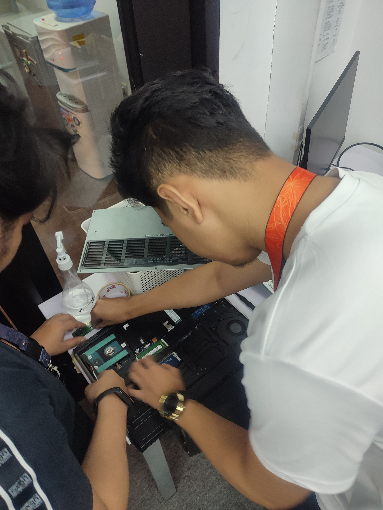
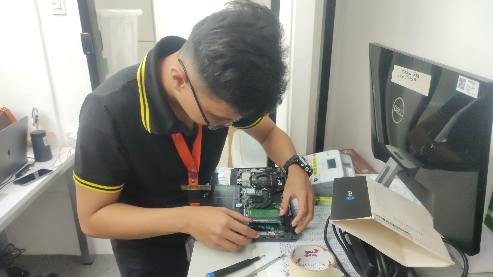

Able to change RAM, Batteries plus checking the wirings inside a laptop.
I chose to pursue an internship in the IT industry because it offers a plethora of career opportunities across various domains like software development, system admin, and technical skills, aligning perfectly with my career aspirations. This dynamic field's high demand for skilled professionals presents an excellent opportunity for me to enhance my skills and increase my marketability to potential employers, paving the way for long-term success.
I opted for an internship in Awesome CX primarily due to the abundant opportunities it offers in roles like IT support, system administration, inventory management, and technical jobs involving hardware configuration for laptops and PCs. These roles not only resonate with my career interests but also provide a diverse and hands-on experience in crucial aspects of information technology. By immersing myself in these areas, I aim to gain practical skills and knowledge that are directly applicable to real-world scenarios, preparing me for a successful and fulfilling career journey in the ever-evolving landscape of technology.
Joining Awesome CX in my internship with exceptional supervisors has been a game-changer for me. From the moment I stepped in, these supervisors have gone above and beyond, not just guiding me but also teaching me every skill necessary for the job. Their dedication to nurturing talent is evident in the comprehensive training sessions they conduct, covering technical expertise as well as essential soft skills. What sets them apart is their willingness to offer personalized support, whether it's through one-on-one coaching sessions, tailored development plans, or simply being there to address any queries or challenges I encounter.
On-the-job training (OJT) is vital for IT students like me as it provides hands-on experience, bridging the gap between theory and practice. Under the guidance of experienced professionals, I gain practical skills, exposure to industry standards, and valuable networking opportunities, preparing me for a successful career in IT.
As an IT intern in a BPO company, I understand the importance of embodying various qualities to excel in my role. Responsibility is key as I manage tasks and meet the expectations of my supervisors and deadlines effectively. I maintain self-confidence to tackle challenges and communicate my ideas confidently to my fellow interns. Possessing appropriate social skills allows me to interact professionally to my superiors, supervisors, and agents. Integrity is non-negotiable as I handle sensitive information with trustworthiness. Adaptability and flexibility are essential in navigating the dynamic IT environments within the company as it helps me to become more nimble of the things that i do, and should not do knowing that this things continually change. Being a team player fosters collaboration and synergy within other interns, in terms of doing tasks together since most of the job that was assigned to us was group tasks rather than individual tasks.
Self-direction, a positive work attitude, and self-motivation drive my continuous learning and improvement, enhancing my performance. Demonstrating good time management and being well-groomed contribute to my professional demeanor, while cooperation fosters proper and brotherly relationships in the workplace.
In various scenarios within the company, I showcase responsibility by taking ownership of assigned tasks, diligently working through technical challenges, and seeking guidance when needed. My self-confidence shines when I present solutions or ideas during group tasks or agent interactions. Possessing appropriate social skills is evident in my effective communication with fellow interns, supervisors and agents. I demonstrate adaptability and flexibility by swiftly adjusting to changes in immediate task transfer or time shifting. As a team player, I collaborate with fellow interns on troubleshooting issues or brainstorming solutions on how to finish given tasks fast. Punctuality and efficiency are my hallmarks, demonstrated through timely completion of tasks and adherence to expectations of the supervisor. Being self-directed, I proactively seek out opportunities to expand my knowledge or skills relevant to my role. These qualities contribute to my growth as a competent soon to be professional within the I.T industry.
I always find tasks to do, asks supervisors if there are things that needs to be done like helping agents, inventory, audit, and tagging equipments. I do believe that this improves my skills in my course as it keeps me to remember many important knowledge that an I.T professional should have.
As i have the most important tasks during our internship, Inventory and audit was not an easy tasks, you need to track every equipment that comes in and goes out from the storage, memorise all equipment listed in the storage, track transferred equipments, where is it deployed and determine which equipment is defective. Now at first i had many mistakes but i asked our senior for guidance and lucky enough he helped me with this said tasks until i was good enough to do it on my own.
You need to be wise, adaptable, responsible and of course, you need to have self confidence in yourself if you really wish to continue to pursue careers in the I.T Profession.
In my OJT experience, I've learned the values of responsibility, adaptability, integrity, and teamwork. These values have not only shaped my professional growth but also instilled in me the importance of accountability, flexibility, honesty, and collaboration, which I believe are indispensable traits for success as a future IT professional.
It is hard to tell that i will be since 3 months of OJT is surely not enough to determine my future, however those 3 months of experience will be my foundation and exposure in becoming a person that i wish to be. A successful man.
Give them hope and glimpses of what an I.T professional should be base from your experiences during the internship of 3 months, that way i am sure that they will be inspired to surpass us during their turn in internship, which is a good thing since more knowledge and skills could to lead more jobs, and more jobs could lead to a successful life.